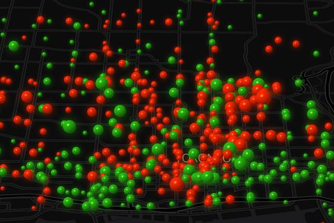
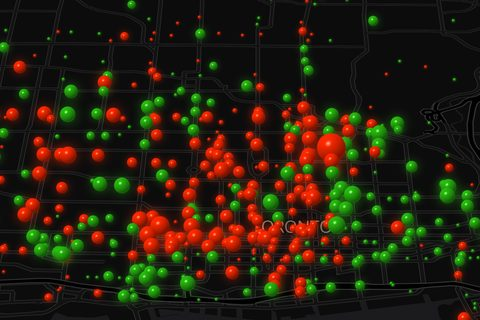
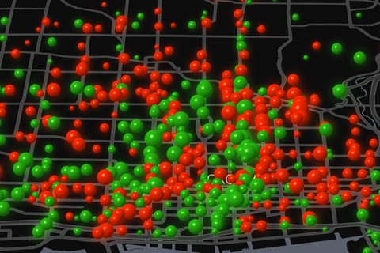
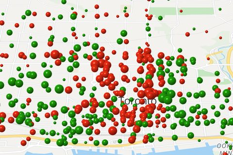

Pulse
Toronto Bike Share, hour by hour
Made by Blair Zasitko
Every sphere is a station. It grows with how fast its bike count is changing right now: not how busy it is, but how far out of balance. Red stations are emptying and green ones are filling. Watch downtown drain into the neighbourhoods every evening, and fill back up every morning.
Four versions of exactly the same numbers. They differ in scale, or in the map underneath.

Red and green
The original. Size is the rate, colour is the direction.

Bigger swings
The size range is half again as wide, so growing and shrinking read from across a room.

Lighter map
Roads, parks, labels and the lake lifted, with the black background kept.

Daylight map
The same spheres on a map coloured like the Google Maps default.